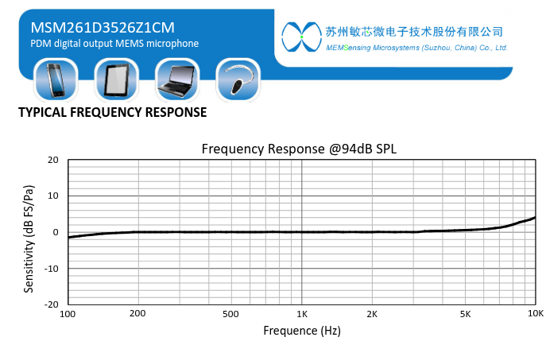
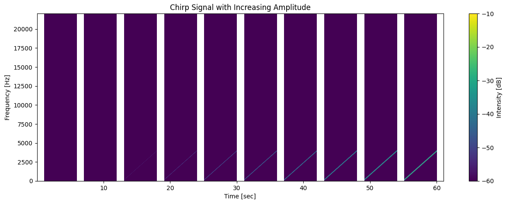
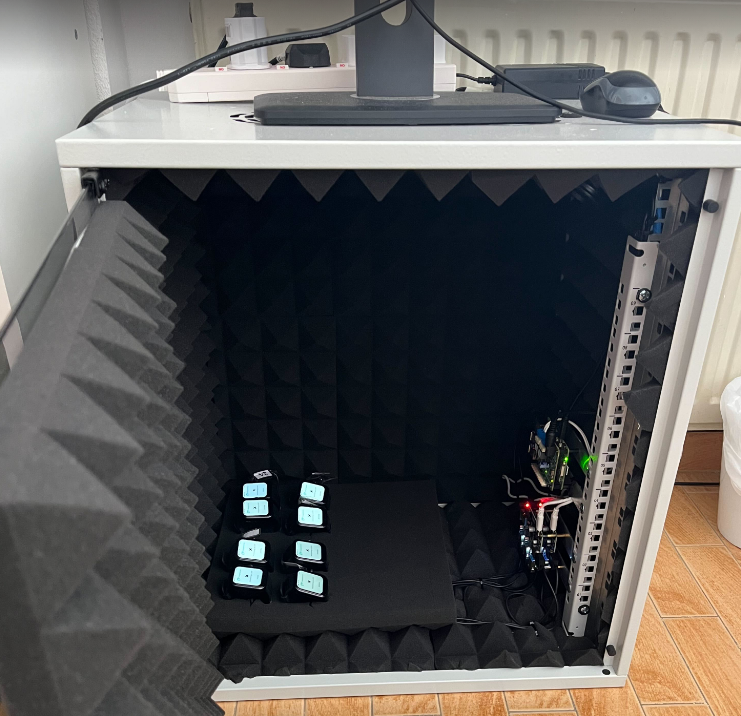
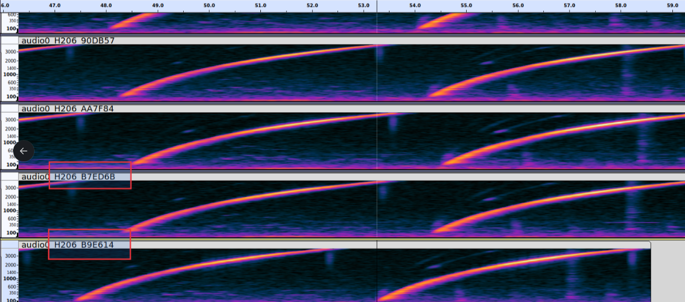

The frequency-response profile of a microphone—the relationship between input acoustic frequency and captured output amplitude—is a critical determinant of performance in audio-based sensing systems. For cough monitoring, accurate representation of the broadband impulsive spectra characteristic of cough events is essential to ensure consistent algorithmic detection across deployed devices. Although component manufacturers perform standardized acoustic testing during production, Hyfe undertook an independent verification process to evaluate whether frequency-response variability across device units could introduce systematic differences in cough detection sensitivity or necessitate device-specific post-production calibration.
All microphones integrated into the target devices are accompanied by manufacturer-certified acoustic characterization. This testing, performed under controlled laboratory conditions, includes frequency-response measurements designed to confirm that each microphone meets the established technical specifications defined for that model and production batch. These specifications typically include tolerance bands across the audible spectrum, ensuring adequate linearity, and predictable behavior at common speech-associated frequencies. The manufacturer’s qualification data therefore provide a foundational assurance that gross deviations or defective components are not present. The below image shows the manufacturer-provided frequency response curve.

Hyfe’s testing was not intended to duplicate or replace manufacturer certification. Instead, it served as an independent verification exercise to determine whether normal, specification-compliant variability in frequency response could impact the downstream performance of Hyfe’s cough detection algorithms. The goal was to assess whether additional homogenization, calibration factors, or algorithmic gain compensation would be required following device assembly.
Hyfe performed controlled acoustic measurements using a synthetic sweeping sinusoidal stimulus (commonly termed a “frequency sweep” or “chirp”) covering the operational bandwidth relevant to cough acoustics and general human soundscape when sampled at 8khz (100 to 4,000 hz), at increasing volume. See below for sweep characteristics.

The sweep was generated via a calibrated loudspeaker within an acoustically controlled space to minimize reflections and environmental distortion (see below image of testing rigt).

The stimulus was engineered to exhibit a flat amplitude profile, allowing deviations in recorded amplitude to be attributed directly to device microphone characteristics rather than input signal irregularities.
Multiple devices from different manufacturing batches were placed at fixed distances and orientations relative to the sound source to ensure spatial consistency. The devices recorded the sweeping signal simultaneously to enable direct comparison across units. Raw waveform data were captured at native sampling rates and processed using standardized digital signal analysis procedures, including:
Across all tested units, the resulting frequency-response curves demonstrated high concordance. Observed variation had no significant deviations in either amplitude or spectral shape that would meaningfully affect the capture of cough-relevant acoustic features. See below for a visual example of equivalence.

Specifically:
It was determined that no device-specific shifts were observed that would necessitate calibration or correction. Detection sensitivity and confidence remained stable across the test set.
The verification study confirmed that the microphones’ frequency-response characteristics are sufficiently uniform across devices to support reliable, calibration-free deployment of Hyfe’s cough detection system. Manufacturer certification ensures baseline compliance with acoustic specifications, and Hyfe’s independent validation demonstrated that the residual variability among units—even across different batches—does not materially affect algorithmic performance. As a result, post-production acoustic calibration or homogenization procedures were deemed unnecessary.
This outcome simplifies field deployment, reduces manufacturing complexity, and provides strong evidence that Hyfe’s sensing pipeline is robust to realistic hardware variability, aligning the system with the reliability and reproducibility expectations required for healthcare and pharmaceutical applications.